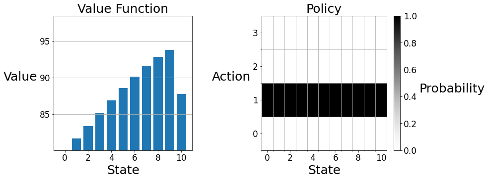
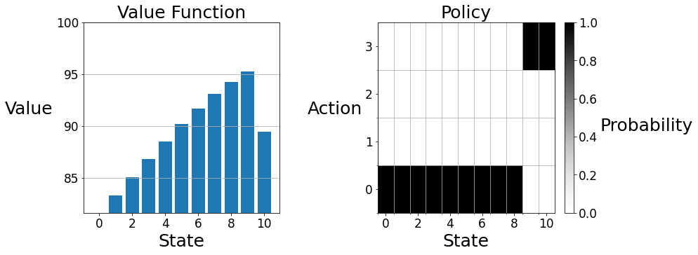

<Figure size 432x288 with 0 Axes>Section: Dynamic Programming
The term dynamic programming (DP) refers to a collection of algorithms that can be used to compute optimal policies given a perfect model of the environment as a Markov decision process (MDP). The key idea of DP, and of reinforcement learning generally, is the use of value functions to organize and structure the search for good policies.
In order to shed light on the Chapter 4 of the bible Reinforcement Learning, the objectives of this notebook are: - Policy Evaluation and Policy Improvement - Value and Policy Iteration - Bellman Equations
Context
We will give an example of how to apply DP into Gridworld City to deal with the City’s Parking problem. The city council has created a Markov decision process (MDP) to model the demand for parking with a reward function that reflects its preferences. - States are nonnegative integers indicating how many parking spaces are occupied. - Actions are nonnegative integers designating the price of street parking. - The reward is a real value describing the city’s preference for the situation. - Time is discretized by hour.
Preliminaries
The BaseAgent, Environment and RLGlue should follow the our first Notebook on Reinforcement Learning Exploration/Exploitation.
The construction of a virtual ParkingWorld and the plot function are given below:
Section 1: Policy Evaluation
First, the city council would like you to evaluate the quality of the existing pricing scheme. Policy evaluation works by iteratively applying the Bellman equation for \(v_{\pi}\) to a working value function, as an update rule, as shown below.
\[\large v(s) \leftarrow \sum_a \pi(a | s) \sum_{s', r} p(s', r | s, a)[r + \gamma v(s')]\] This update can either occur “in-place” (i.e. the update rule is sequentially applied to each state) or with “two-arrays” (i.e. the update rule is simultaneously applied to each state). Both versions converge to \(v_{\pi}\) but the in-place version usually converges faster. In this assignment, we will be implementing all update rules in-place, as is done in the pseudocode of chapter 4 of the textbook.
The policy evaluation can be expressed in the code below:
def evaluate_policy(env, V, pi, gamma, theta):
delta = float('inf')
while delta > theta:
delta = 0
for s in env.S:
v = V[s]
bellman_update(env, V, pi, s, gamma)
delta = max(delta, abs(v - V[s]))
return VThen, the Bellman update will be:
def bellman_update(env, V, pi, s, gamma):
"""Mutate ``V`` according to the Bellman update equation."""
v = 0
for a in env.A:
transitions = env.transitions(s, a)
for s_, (r, p) in enumerate(transitions):
v += pi[s][a] * p * (r + gamma * V[s_])
V[s] = v
The observation shows that the value monotonically increases as more parking is used, until there is no parking left, in which case the value is lower. Because of the relatively simple reward function (more reward is accrued when many but not all parking spots are taken and less reward is accrued when few or all parking spots are taken) and the highly stochastic dynamics function (each state has positive probability of being reached each time step) the value functions of most policies will qualitatively resemble this graph. However, depending on the intelligence of the policy, the scale of the graph will differ. In other words, better policies will increase the expected return at every state rather than changing the relative desirability of the states. Intuitively, the value of a less desirable state can be increased by making it less likely to remain in a less desirable state. Similarly, the value of a more desirable state can be increased by making it more likely to remain in a more desirable state. That is to say, good policies are policies that spend more time in desirable states and less time in undesirable states. As we will see in this assignment, such a steady state distribution is achieved by setting the price to be low in low occupancy states (so that the occupancy will increase) and setting the price high when occupancy is high (so that full occupancy will be avoided).
Policy Iteration
Now the city council would like to propose a more efficient policy using policy iteration. Policy iteration works by alternating between evaluating the existing policy and making the policy greedy with respect to the existing value function.
def improve_policy(env, V, pi, gamma):
policy_stable = True
for s in env.S:
old = pi[s].copy()
q_greedify_policy(env, V, pi, s, gamma)
if not np.array_equal(pi[s], old):
policy_stable = False
return pi, policy_stable
def policy_iteration(env, gamma, theta):
V = np.zeros(len(env.S))
pi = np.ones((len(env.S), len(env.A))) / len(env.A)
policy_stable = False
while not policy_stable:
V = evaluate_policy(env, V, pi, gamma, theta)
pi, policy_stable = improve_policy(env, V, pi, gamma)
return V, pidef q_greedify_policy(env, V, pi, s, gamma):
"""Mutate ``pi`` to be greedy with respect to the q-values induced by ``V``."""
G = np.zeros_like(env.A, dtype=float)
for a in env.A:
transitions = env.transitions(s, a)
for s_, (r, p) in enumerate(transitions):
G[a] += p * (r + gamma * V[s_])
greed_actions = np.argwhere(G == np.amax(G))
for a in env.A:
if a in greed_actions:
pi[s, a] = 1 / len(greed_actions)
else:
pi[s, a] = 0Section 3: Value Iteration
Value iteration works by iteratively applying the Bellman optimality equation for \(v_{\ast}\) to a working value function, as an update rule, as shown below.
\[\large v(s) \leftarrow \max_a \sum_{s', r} p(s', r | s, a)[r + \gamma v(s')]\]
def value_iteration(env, gamma, theta):
V = np.zeros(len(env.S))
while True:
delta = 0
for s in env.S:
v = V[s]
bellman_optimality_update(env, V, s, gamma)
delta = max(delta, abs(v - V[s]))
if delta < theta:
break
pi = np.ones((len(env.S), len(env.A))) / len(env.A)
for s in env.S:
q_greedify_policy(env, V, pi, s, gamma)
return V, pidef bellman_optimality_update(env, V, s, gamma):
"""Mutate ``V`` according to the Bellman optimality update equation."""
vmax = - float('inf')
for a in env.A:
transitions = env.transitions(s, a)
va = 0
for s_, (r, p) in enumerate(transitions):
va += p * (r + gamma * V[s_])
vmax = max(va, vmax)
V[s] = vmax
In the value iteration algorithm above, a policy is not explicitly maintained until the value function has converged. Below, we have written an identically behaving value iteration algorithm that maintains an updated policy. Writing value iteration in this form makes its relationship to policy iteration more evident. Policy iteration alternates between doing complete greedifications and complete evaluations. On the other hand, value iteration alternates between doing local greedifications and local evaluations.
def value_iteration2(env, gamma, theta):
V = np.zeros(len(env.S))
pi = np.ones((len(env.S), len(env.A))) / len(env.A)
while True:
delta = 0
for s in env.S:
v = V[s]
q_greedify_policy(env, V, pi, s, gamma)
bellman_update(env, V, pi, s, gamma)
delta = max(delta, abs(v - V[s]))
if delta < theta:
break
return V, pi